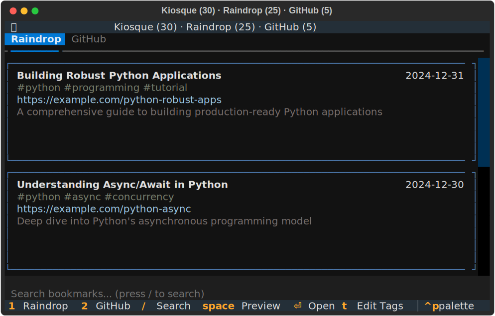

TUI Guide¶
Complete reference for Kiosque's Terminal User Interface (TUI).
Overview¶
The Kiosque TUI provides a unified interface for managing bookmarks from multiple sources:
- Raindrop.io - Personal bookmark manager with tags and collections
- GitHub Stars - Your starred repositories with README previews
Launching the TUI¶
Interface Layout¶

The TUI features:
- Header: Shows window title with total entry counts for each tab
- Tabs: Switch between Raindrop and GitHub Stars (
1/2) - Entry List: Scrollable list of bookmarks with:
- Title (bold, first line)
- Date (right-aligned)
- Tags/topics (gray, italic)
- URL (blue)
- Brief description/excerpt
- Search Input: Filter entries by typing
/ - Footer: Quick reference for key bindings
Navigation¶
Movement¶
| Key | Action |
|---|---|
↑ / k |
Move up one entry |
↓ / j |
Move down one entry |
Ctrl+u |
Scroll up 5 entries |
Ctrl+d |
Scroll down 5 entries |
g |
Jump to top |
G |
Jump to bottom (Shift+g) |
PageUp |
Scroll up one page |
PageDown |
Scroll down one page |
Tab Switching¶
| Key | Action |
|---|---|
1 |
Switch to Raindrop tab |
2 |
Switch to GitHub Stars tab |
Tab |
Cycle through tabs |
Search and Filtering¶
Activating Search¶
| Key | Action |
|---|---|
/ |
Activate search bar |
Esc |
Clear search / Exit search |
Ctrl+C |
Clear search / Exit search |
Search Behavior¶
- Debounced - Waits 300ms after you stop typing before filtering
- Case-insensitive - Searches regardless of letter case
- Multi-field - Searches across:
- Title
- URL
- Tags (Raindrop)
- Topics (GitHub)
- Description
- Language (GitHub)
- Repository name (GitHub)
Example searches:
python- Finds all entries with "python" in any field#tutorial- Finds entries tagged "tutorial"github.com- Finds all GitHub URLs
Search Mode Restrictions¶
- Tag editing disabled - When in tag edit mode (press
t), search is automatically disabled - Single mode active - Cannot search while editing tags
Entry Actions¶
Common Actions (All Tabs)¶
| Key | Action | Description |
|---|---|---|
Space |
Preview | Open article/README in modal viewer |
Enter / o |
Open in browser | Opens URL in default browser |
c |
Copy URL | Copy entry URL to clipboard |
Esc |
Close modal | Exit preview modal |
Raindrop-Specific Actions¶
| Key | Action | Description |
|---|---|---|
d |
Delete | Permanently delete bookmark |
e |
Archive | Move bookmark to archive |
t |
Edit tags | Enter tag editing mode |
s |
Star on GitHub | Star GitHub repos (only for GitHub URLs) |
GitHub-Specific Actions¶
| Key | Action | Description |
|---|---|---|
u |
Unstar | Remove star from repository |
Space |
Preview README | View repository README in modal |
Tag Editing (Raindrop)¶
Entering Tag Mode¶
- Navigate to a Raindrop bookmark
- Press
t - Tag edit field appears
Input Formats¶
The tag editor accepts multiple formats:
Space-separated:
Comma-separated:
Hashtags:
Mixed:
All formats are normalized to a consistent tag list.
Saving/Canceling¶
| Key | Action |
|---|---|
Enter |
Save tags and exit tag mode |
Esc |
Cancel and exit tag mode |
Important Notes¶
- Search disabled - While editing tags, search is automatically disabled
- Immediate sync - Tags are synchronized with Raindrop.io on save
- Visual feedback - Tags appear as
#tag1 #tag2in the entry display
Preview Modal¶
Features¶
- Markdown rendering - Articles and READMEs displayed with formatting
- Syntax highlighting - Code blocks highlighted
- Scroll support - Navigate long documents
- Frontmatter display - Shows metadata (title, date, author)
Modal Controls¶
| Key | Action |
|---|---|
↑ / k |
Scroll up |
↓ / j |
Scroll down |
PageUp |
Scroll up one page |
PageDown |
Scroll down one page |
g |
Jump to top |
G |
Jump to bottom |
Esc |
Close modal |
Known Issue¶
Link Navigation Error: Clicking links in preview modals opens them in the browser correctly, but also triggers a FileNotFoundError due to Textual framework trying to navigate to the URL as a local file. This is a Textual bug, not a Kiosque issue. The link still opens correctly - just ignore the error message.
General Actions¶
Application Control¶
| Key | Action |
|---|---|
r |
Refresh current tab |
q |
Quit application |
Ctrl+C |
Quit application (force) |
? |
Show help (if implemented) |
Refresh Behavior¶
- Current tab only - Press
rto refresh active tab - Shows loading indicator - Visual feedback during refresh
- Preserves position - Attempts to maintain scroll position
Window Title¶
The window title shows real-time counts:
- Total count -
(42)- Combined entries across all tabs - Per-tab counts -
Raindrop (30)- Entries in each tab - Live updates - Updates after delete, archive, refresh
Progressive Loading¶
The TUI uses progressive loading for better responsiveness:
- Raindrop loads first - Appears immediately
- 100ms delay - Brief pause
- GitHub loads - Fetched in background
- Non-blocking - UI remains responsive during load
Data Sources¶
Raindrop.io¶
Configuration required:
Features:
- Browse all bookmarks with metadata
- Preview articles with markdown rendering
- Archive bookmarks
- Delete bookmarks
- Edit tags inline
- Star GitHub repositories found in bookmarks
GitHub Stars¶
Configuration required:
Features:
- Browse starred repositories
- Preview README files
- Unstar repositories
- View star count, language, topics
- Search by name, description, topics
Tips and Tricks¶
Efficient Navigation¶
- Use vim keys -
j/kare faster than arrow keys - Jump to ends -
gandGto quickly reach top/bottom - Page scrolls -
Ctrl+d/Ctrl+ufor faster navigation - Tab switching - Use
1/2for quick tab switching
Effective Searching¶
- Start broad - Search for general terms, then refine
- Use tags -
#tagformat for precise tag matching - Language filter - Search "Python", "Rust", etc. for GitHub repos
- Wait for debounce - Let search complete (300ms after typing)
Tag Management¶
- Consistent format - Use lowercase tags for consistency
- Descriptive tags - Use meaningful tags:
#tutorialnot#tut - Multiple tags - Combine tags for better organization
- Review regularly - Edit tags to keep them current
Performance¶
- Search debouncing - Prevents lag while typing (300ms delay)
- Progressive loading - UI stays responsive during data fetch
- Lazy preview - README/articles only loaded on preview
Troubleshooting¶
Tab doesn't appear¶
GitHub tab missing:
- Verify
githubtoken is configured - Check token hasn't expired
- Ensure
[github]section exists in config
Raindrop tab empty:
- Verify
raindrop.iotoken is configured - Test token validity:
curl -H "Authorization: Bearer TOKEN" https://api.raindrop.io/rest/v1/user
Search not working¶
- Search is debounced - wait 300ms after typing
- Cannot search while editing tags (press
Escto exit tag mode) - Clear search with
Escand try again
Preview shows errors¶
- Some sites may not be accessible
- GitHub README might be missing
- Network connectivity issue
- Try opening in browser with
Enterinstead
Actions not responding¶
- Ensure correct tab is active
- Some actions only work on specific tabs (e.g.,
tfor Raindrop only) - Try refreshing the tab with
r
Slow performance¶
- Large number of bookmarks (1000+) may slow loading
- GitHub API rate limits (5000/hour with token)
- Network latency
- Try searching to filter entries
Keyboard Shortcuts Quick Reference¶
Essential¶
| Key | Action |
|---|---|
/ |
Search |
Space |
Preview |
Enter |
Open in browser |
q |
Quit |
r |
Refresh |
Navigation¶
| Key | Action |
|---|---|
j/k |
Up/Down |
g/G |
Top/Bottom |
1/2 |
Switch tabs |
Raindrop¶
| Key | Action |
|---|---|
t |
Edit tags |
e |
Archive |
d |
Delete |
s |
Star (GitHub URLs) |
GitHub¶
| Key | Action |
|---|---|
u |
Unstar |
Space |
Preview README |
See Also¶
- Raindrop Integration - Raindrop.io setup and features
- GitHub Stars Integration - GitHub Stars setup and features
- Bookmark Management - Overview of bookmark features
- Configuration - API token setup